Pinette
Support
Kom i gang
På Mac bor Pinette i menulinjen: klik på nålen og derefter på Ny. På iPhone og iPad skal du åbne appen og skrive: den første linje i en note er dens titel. Fastgør en note for at holde den øverst på listen og i widgets og på Mac for at lade den svæve over dine vinduer.
Spørgsmål
Hvordan kopierer jeg en kode fra en note?
På Mac skal du klikke på linjen i den svævende note. På iPhone og iPad skal du åbne noten stort (Vis stort i dens menu) og trykke på linjen.
En svævende note er i vejen.
Træk den et andet sted hen, eller slip den nær et hjørne. Slå Klik igennem til i dens menu, så klik går videre til vinduet bagved, eller tryk på ⌃⌥⌘J for at skjule alle noter et øjeblik.
Hvordan sætter jeg en note på låseskærmen?
Tilføj en Pinette-widget til låseskærmen eller til StandBy.
Er hemmelige noter virkelig skjult?
Hemmelige noter vises aldrig i widgets eller på låseskærmen, uanset om enheden er låst eller ej: Tryk på en for at åbne den i Pinette, og slå »Kræv Face ID eller adgangskode« til i Indstillinger, hvis du vil. På Mac er hemmelige noter slørede, indtil du peger på dem, og de udelades fra skærmbilleder og skærmdeling. Eksporterede filer og QR-koder indeholder selve teksten: del dem kun med dine egne enheder.
Hvordan kommer noter over på mine andre enheder?
Med Synkroniser med iCloud slået til (standard) gennem din egen private iCloud på alle Mac-computere, iPhones og iPads, der er logget ind på den. Uden iCloud, eller til en Android-telefon, kan du vise en notes QR-kode eller dele noter som en .pinette-fil.
Synkroniseringen siger, at jeg ikke er logget ind.
Log ind på iCloud i Systemindstillinger eller Indstillinger, og sørg for, at iCloud Drive er slået til. Pinette fortsætter med at virke på enheden imens og synkroniserer, når iCloud er tilbage.
Kontakt
Skriv til khangazun@gmail.com. Oplys, hvilken enhed og systemversion du bruger; på Mac udfylder Indstillinger › Om › Skriv til udvikleren det for dig.